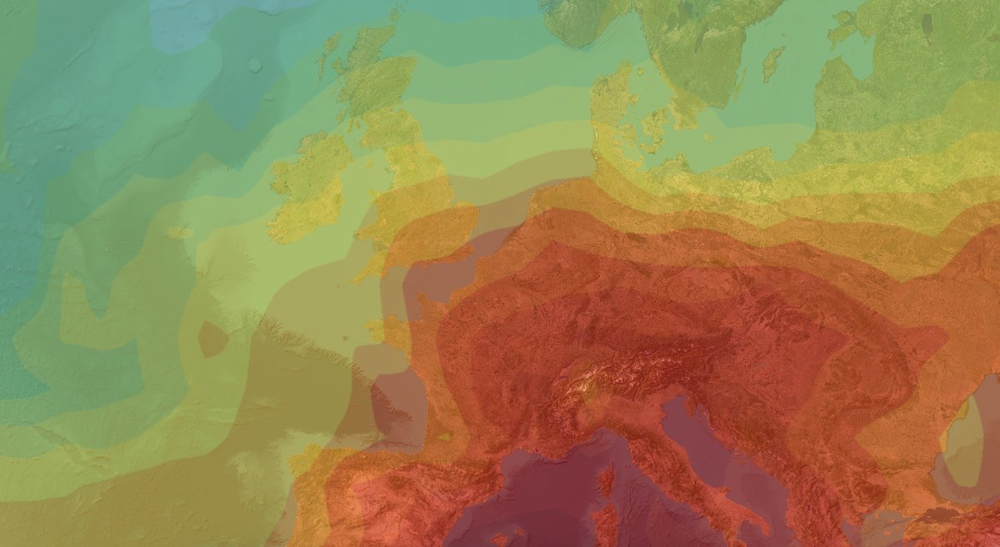
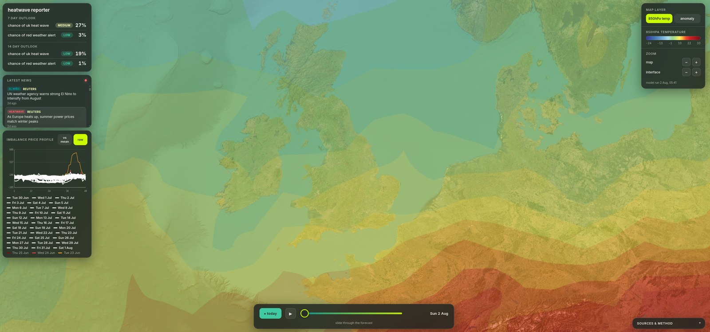

Project · energy markets & climate
Heatwave Tracker & Impact
How much UK heat actually moves demand and price, and the risk a heatwave poses to retail suppliers.
Thank you to everyone who used my heatwave detector through July. It was a difficult year, statistically and emotionally. I've ordered a heat pump to prepare my family for what's coming, and I'm now doing the research on what we can achieve professionally, as I'm sure many good people are doing ahead of me.
Please read my new opinion piece, Hydrophobia, on what to expect next from weather in the UK. Sadly we understand what follows a heatwave much better now, a small consolation prize during a drought.
The insight
Heat moves price before it moves demand
A cold snap hits a retail supplier in a way everyone in the industry already prices for. Heat is the less-rehearsed direction: the demand response is smaller and later than people assume, but it lands on a system with thin summer margins and plant on outage, so the price response arrives first, and harder. The tracker put those two lines side by side, day by day.
TODO: drop the headline number in here, the peak day's demand uplift against the same day's price move, from the tracker's own record. The insight block should open with that figure, not with the framing.

What it was
A web app that tracked UK temperature against electricity demand and wholesale price through the summer of 2026, and reported the relationship as it developed rather than after the season closed. It ran from late June until the end of July, through the four heatwaves recorded that summer.
The map showed the forecast. The panels showed heatwave and red-alert probabilities over 7 and 14 days, a rolling imbalance price profile against the mean, and the day's heat coverage. All on one screen, scrubable forward through the forecast.

TODO: one short paragraph on the stack and the data sources, matching the level of detail on the Hormuz page.
Why it's retired
The season it was built to watch is over. What matters now is what follows the heat: baked ground, surface-water flooding, and a grid still switching clean supply off. That work continues in Hydrophobia.
Notes & sources
- More than half of England formally in drought as of late July 2026. BBC News, "More than half of England in drought, Environment Agency declares", 29 July 2026.